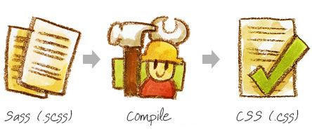

Sass/SCSS
João Eduardo Montandon
Desenvolvimento de Aplicações Web - COLTEC/MG

Desenvolvimento de Aplicações Web - COLTEC/MG
João Eduardo Montandon
Desenvolvimento de Aplicações Web - COLTEC/MG
A linguagem CSS foi uma solução simples e elegante para separar estrutura e apresentação de páginas web
Escalar simplicidade é difícil
Principais problemas:
Ctrl + C & Ctrl + VSynthatically Awesome Stylesheets
Extensão da linguagem CSS com recursos de linguagens de programação
Trabalha na forma de pré-processamento (compila o código de Sass para CSS)
$font-stack: Helvetica;
$primary-color: #333;
body {
font: 100% $font-stack;
color: $primary-color;
}
body {
font: 100% Helvetica;
color: #333;
}
$ sass estilo.scss estilo.css
$ gem install sass$ sass input.scss output.css para compilarPara mais informações, consulte este link
Variáveis podem ser utilizadas para armazenar informações a serem reaprovitadas durante escrita do CSS, tais como cores, fontes, tamanho, etc.
$variavel: valor;
$font-stack: Helvetica; /* fonte padrão */
$primary-color: #333; /* cor principal */
body {
font: 100% $font-stack;
color: $primary-color;
}
body {
font: 100% Helvetica;
color: #333;
}
Também é possível utilizar variáveis para interpolar nomes de propriedades e seletores
Para isso, usa-se o símbolo #{$variavel}
$name: foo; /* nome a ser interpolado */
$attr: border; /* propriedade a ser interpolada */
p.#{$name} {
#{$attr}-color: blue;
}
p.foo {
border-color: blue;
}
Assim como acontece no HTML, é possível fazer aninhamento dos seletores
O aninhamento evita a necessidade de se redeclarar seletores para regras específicas
Também é possível aninhar media queries!!
nav {
ul {
margin: 0;
padding: 0;
list-style: none;
}
li { display: inline-block; }
a {
display: block;
padding: 6px 12px;
text-decoration: none;
}
}
nav ul {
margin: 0;
padding: 0;
list-style: none;
}
nav li {
display: inline-block;
}
nav a {
display: block;
padding: 6px 12px;
text-decoration: none;
}
.sidebar {
width: 300px;
@media screen and (orientation: landscape) {
width: 500px;
}
}
.sidebar {
width: 300px;
}
@media screen and (orientation: landscape) {
.sidebar {
width: 500px;
}
}
&Utilizamos o símbolo & para obter o nome do seletor pai
a {
font-weight: bold;
text-decoration: none;
&:hover {
text-decoration: underline;
}
body.firefox & {
font-weight: normal;
}
}
a {
font-weight: bold;
text-decoration: none;
}
a:hover {
text-decoration: underline;
}
body.firefox a {
font-weight: normal;
}
Recurso que permite importar arquivos SCSS em outros arquivos
Os partials devem se iniciar sempre com underline
/* _reset.scss */
html, body, ul, ol {
margin: 0;
padding: 0;
}
/* base.scss */
@import 'reset';
body {
font: 100% Helvetica, sans-serif;
background-color: #efefef;
}
/* base.css */
html, body, ul, ol {
margin: 0;
padding: 0;
}
body {
font: 100% Helvetica, sans-serif;
background-color: #efefef;
}
Permite a criação de grupos de comandos para serem utilizados posteriormente
Útil principalmente em situações onde é necessário implementar rotinas de compatibilidade
@mixin border-radius($radius) {
-webkit-border-radius: $radius;
-moz-border-radius: $radius;
-ms-border-radius: $radius;
border-radius: $radius;
}
.box {
@include border-radius(10px);
}
.box {
-webkit-border-radius: 10px;
-moz-border-radius: 10px;
-ms-border-radius: 10px;
border-radius: 10px;
}
Permite que você "herde" as propriedades de um componente em outro
A herança ocorre por meio do comando @extend
.message {
border: 1px solid #ccc;
padding: 10px;
color: #333;
}
.success {
@extend .message;
border-color: green;
}
.error {
@extend .message;
border-color: red;
}
.message, .success, .error {
border: 1px solid #cccccc;
padding: 10px;
color: #333;
}
.success {
border-color: green;
}
.error {
border-color: red;
}
É possível utilizar as operações matemáticas básicas para calcular valores fornecidos para as propriedades
| Operadores |
| + |
| - |
| / |
| * |
| % |
.container {
width: 100%;
}
article {
float: left;
width: 600px / 960px * 100%;
}
aside {
float: right;
width: 300px / 960px * 100%;
}
.container {
width: 100%;
}
article {
float: left;
width: 62.5%;
}
aside {
float: right;
width: 31.25%;
}
São disponiblizadas várias funções built-in que podem ser úteis durante a implementação do CSS
| Função | Exemplo |
lighten |
lighten(#000, 20%) |
darken |
darken(#FFF, 20%) |
round |
round(10.66666px) |
percentage |
percentage(16px / 32px) |
Lista completa pode ser vista aqui
O Sass fornece estruturas condicionais onde pode-se determinar propriedades com base em determinados cenários
@if expressao {
comandos;
comandos;
} @else if expressao {
comandos;
}
/* arquivo.scss */
p {
@if 1 + 1 == 2 {
border: 1px solid;
}
@if 5 < 3 {
border: 2px dotted;
}
@if null {
border: 3px double;
}
}
/* arquivo.css */
p {
border: 1px solid;
}
O Sass fornece suporte as estruturas de repetição clássicas:
@for para iteração de forma controlada@each para iteração sobre coleções e arrays@while para iteração indeterminada@for
@for $i from 1 to 3 {
.item-#{$i} { width: 2em * $i; }
}
.item-1 {
width: 2em;
}
.item-2 {
width: 4em;
}
.item-3 {
width: 6em;
}
@each
@each $animal in puma, sea-slug, egret {
.#{$animal}-icon {
background-image: url('/images/#{$animal}.png');
}
}
.puma-icon { background-image: url('/images/puma.png'); }
.sea-slug-icon { background-image: url('/images/sea-slug.png'); }
.egret-icon { background-image: url('/images/egret.png'); }
@while
$i: 6;
@while $i > 0 {
.item-#{$i} { width: 2em * $i; }
$i: $i - 2;
}
.item-6 {
width: 12em;
}
.item-4 {
width: 8em;
}
.item-2 {
width: 4em;
}